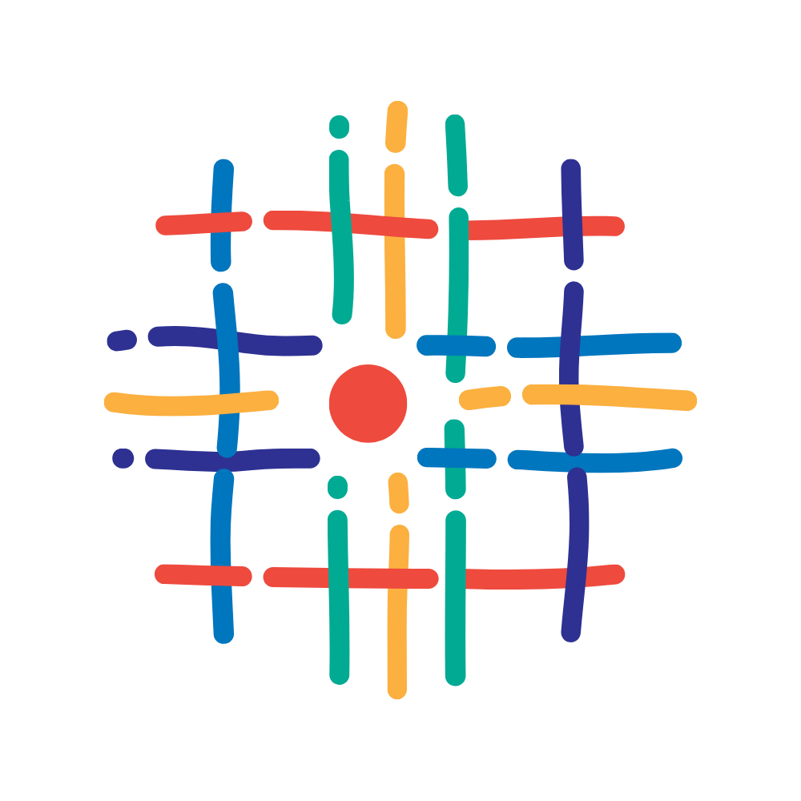
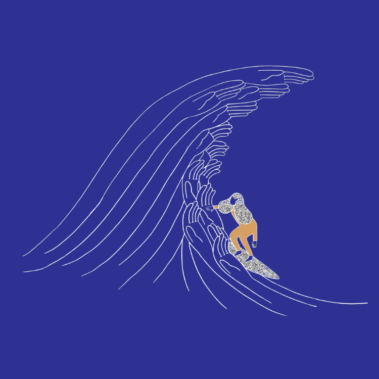
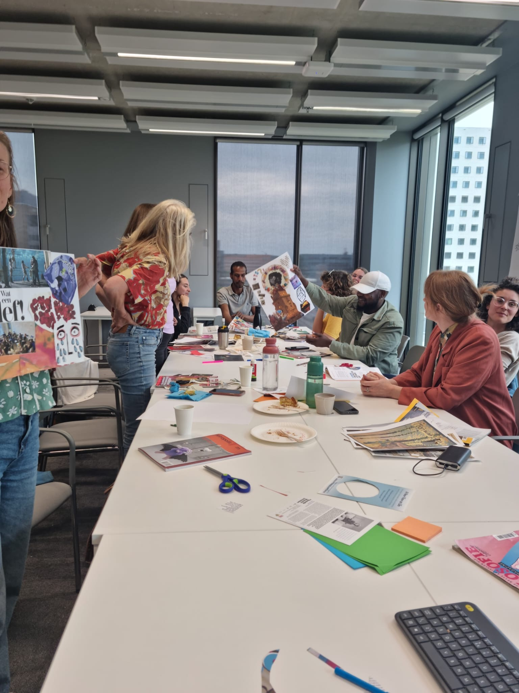

Bringing academia and society into more meaningful collaboration for social justice
The Co-Creation Lab for Inclusive Knowledge Production Research & Innovation Lab, based within the Faculty of Social Sciences at Vrije Universiteit Amsterdam, is a space for critical, reciprocal, and ethical collaboration between academia and social actors. Together, we cultivate knowledges and practices for a more just society, while unsettling more traditional forms of academia.

We depart from the belief that it is not possible to challenge imbalanced power structures, redesign policy, or deliver impactful research without a strong and ethical connection to the lives and contexts of those experiencing injustice.
We bring together communities, researchers, and practitioners — activists, artists, and advocates — to develop knowledges collaboratively, valuing lived experience alongside academic and professional perspectives and leading to transformative actions.
We explore participatory and creative approaches that challenge traditional academic models and open up more inclusive ways of knowing and learning, always aware of the power dynamics at play.
We create spaces for dialogue and exchange that support long-term collaboration between communities, institutions, and social actors working towards justice across local, regional, and global contexts.
Based in Amsterdam, the Co-creation Lab works with both local and international communities, actively seeking to form alliances and build solidarity across diverse movements for social and environmental justice.
We challenge structural inequalities by recognising the expertise, initiatives, and lived experiences of diverse actors. Co-creation means bringing together those who are committed to collectively imagining and building more just societies and environments.
We believe that a more just society cannot be achieved without a strong and ethical connection to the lives of those experiencing injustice. For this reason, we centre historically marginalised voices and lived experiences as a starting point for collective reflection and action.
We do this by facilitating events within and beyond academia, supporting non-traditional research practices, building meaningful alliances, and mobilising resources and expertise in support of social and environmental justice.


We design learning experiences where everyone is both teacher and student — because knowledge flows in all directions.
Hands-on sessions where academic researchers and community members co-develop tools, frameworks, and findings together.
University courses co-created with the communities they study — students learn directly from lived experience, not just textbooks.
All methodologies, toolkits, and research outputs are made available openly so others can build on our work.
Concrete partnerships and inquiries where co-creation happens. Filter by theme to find what resonates with you.
A comparative project investigating how engaged scholarship can contribute to the societal inclusion of refugees across South Africa, the US, and the Netherlands.
A creative collaboration giving people with refugee backgrounds professional guidance to share their unheard stories on stage — transformed into podcasts and live performances.
Bridging policymakers and refugee/migrant-led organisations across four EU countries to create policies genuinely grounded in community realities.
Bringing together people across political and social divides through Storytelling Circles — using fiction and play to address polarising issues with empathy.
A workshop series centring queer refugee stories through creative practices, co-creating knowledge about resilience and engaged scholarship.
Undocumented youth and VU researchers working together to create more inclusive educational environments.
A refugee-led project creating space to collectively articulate conditions for meaningful co-creation in art and research.
Community-led research exploring financial resilience and queer entrepreneurship in Nairobi's hustle economies.
Mapping barriers transgender youth face in accessing care in The Hague, integrating youth and professional perspectives.
A community magazine by Aralez presenting a manifesto for reparations, connecting decolonisation activism with academic reflection.
A photo-voice study with 32 gang-violence survivors in Cape Town, co-curating an exhibition about identity transformation and community healing.
Co-creative action research building new 'chains of trust' between Amsterdam residents, frontline workers, and policymakers.
A growing collective of researchers, lecturers, PhD candidates, and collaborators at Vrije Universiteit Amsterdam. Click a group to expand, and any name to read more.